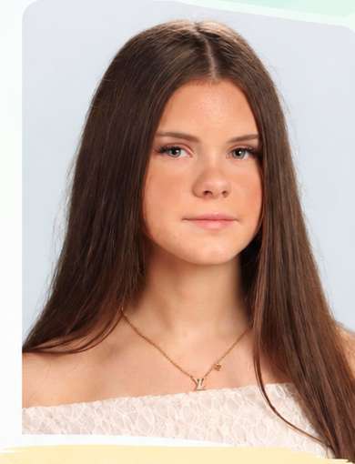
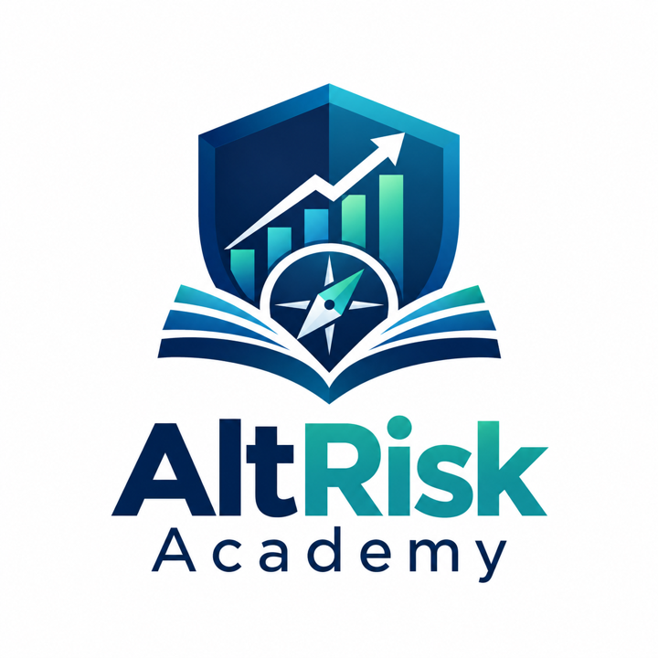

AltRisk
A developing student project focused on comparing risk and return across alternative investments.
Developing conceptView project →
Student | Programmer | Financial Literacy Advocate | Student Leader

College-level coursework in finance, accounting, taxation, business, and financial mathematics.
Programming experience with Python, C++, Java, HTML, and CSS.
Founder & President of the Financial Literacy Club and active student ambassador.
High school studies alongside college-level work in finance, data science, and business.
A developing student project focused on comparing risk and return across alternative investments.
Developing conceptPractical financial education, guest speakers, and career exploration.
Explore the club →A planned project exploring volatility, diversification, drawdowns, and scenario-based losses.
In development
An interactive educational platform helping students understand risk, evaluate financial decisions, and prepare for uncertainty.
Visit AltRisk Academy →Explore Maria's participation in student innovation and entrepreneurship competitions through AltRisk Academy.
Explore competitions →Maria's current academic path combines a programming specialization at Keefe Regional Technical School with college-level studies at Bristol Community College, Massasoit Community College, and UMass Amherst.
Programming specialization; cybersecurity, Python, C++, and AP Statistics.
Financial management studies including accounting, business law, taxation, and marketing.
Data science and computer science coursework including programming, statistics, and calculus.
Finance-focused college-level studies with economics and quantitative coursework.
Founder & President; weekly meetings, financial education, and guest speakers.
Finance and data-driven perspective on climate resilience and clean-energy transition topics.
McAuliffe Center and Keefe student outreach and career-awareness work.
Financial risk analysis, alternative investments, Python for financial applications, financial literacy education, student leadership, and college-level finance and data coursework.